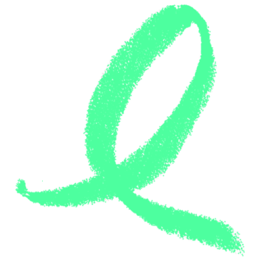

<!doctype html>
<html lang="en">
<head>
<meta charset="utf-8">
<title>ObjectExplorer promo</title>
<link rel="stylesheet" href="./promo.css">
</head>
<body>
<div id="stage">
	<div id="layers"></div>
	<div class="shade"></div>
	<div class="caption" id="caption"></div>
	<div id="flash"></div>
</div>
<script type="module">
// The promotion film, as one function of time. Nothing animates on its own: the recorder in
// scripts/promo.mjs sets the clock frame by frame and screenshots each one, so a slow machine
// cannot drop a frame and the film is the same every time it is built.
//
// Open it with ?t=12.5 to look at one moment of it. The squirrel is drawn by ./squirrel.js, a
// pure function of its pose, so the cartoon cuts are drawn again on every frame.
//
// The page is laid out at 1280x720 and recorded at a device scale of 1.5, so the film is 1080p
// with text drawn at that size and every screenshot sampled from its own full resolution.
import { squirrel, nut } from "./squirrel.js"

const SHOT = "../docs/public/screenshot/"
// the formats that pour out of the nut when it opens
const FORMATS = ["PARQUET", "DELTA", "ICEBERG", "CSV", "PDF", "DWG", "FBX", "JSON", "SQLITE", "PPTX"]

// One entry per cut. `at` is when it starts, `hold` how long it is on screen. A cartoon cut has
// `cartoon`, the name of its drawing below; a screenshot has `src` and `zoom`, how far it pulls
// back while it plays. `bubble` is what the squirrel says, `lines` the caption under a screenshot.
const scenes = [
	{ at: 0.0,  hold: 2.6, cartoon: "found",  bubble: "What's this?" },
	{ at: 2.6,  hold: 1.2, cartoon: "tool",   tool: "hammer", bubble: "Hammer? <em>Nope.</em>" },
	{ at: 3.8,  hold: 1.2, cartoon: "tool",   tool: "wrench", bubble: "Wrench? <em>Nope.</em>" },
	{ at: 5.0,  hold: 1.2, cartoon: "tool",   tool: "drill",  bubble: "Drill? <em>Nope.</em>" },
	{ at: 6.2,  hold: 1.2, cartoon: "tool",   tool: "torch",  bubble: "Blowtorch? <em>Nope.</em>" },
	{ at: 7.4,  hold: 1.6, cartoon: "tired",  bubble: "Still can't open it…" },
	{ at: 9.0,  hold: 2.0, cartoon: "idea",   bubble: "Wait! I have <em>ObjectExplorer!</em>" },
	{ at: 11.0, hold: 3.2, src: SHOT + "hero.png",                zoom: 1.08, lines: ["One window.", "S3, GCS, Azure, OneLake, local."], small: 1 },
	{ at: 14.2, hold: 2.8, src: SHOT + "column-summary.png",      zoom: 1.10, lines: ["See the shape", "before you read a row."] },
	{ at: 17.0, hold: 2.8, src: SHOT + "notebook-chart.png",      zoom: 1.08, lines: ["SQL and a chart,", "where the data lives."] },
	{ at: 19.8, hold: 2.8, src: SHOT + "story-big-file.png",      zoom: 1.08, lines: ["A 2 GB file?", "Just scroll it."] },
	{ at: 22.6, hold: 2.8, src: SHOT + "story-cad-cloud.png",     zoom: 1.08, lines: ["CAD, straight", "from the bucket."] },
	{ at: 25.4, hold: 2.8, src: SHOT + "format-model.png",        zoom: 1.08, lines: ["Models, textures", "and shaders, drawn."] },
	{ at: 28.2, hold: 2.8, src: SHOT + "lake-metadata.png",       zoom: 1.08, lines: ["Delta, Iceberg, Hudi —", "just tables."] },
	{ at: 31.0, hold: 2.8, src: SHOT + "story-agent-observe.png", zoom: 1.08, lines: ["Watch an agent", "read your data."] },
	{ at: 33.8, hold: 2.8, src: SHOT + "story-agent-replay.png",  zoom: 1.08, lines: ["Then replay", "every step it took."] },
	{ at: 36.6, hold: 2.8, src: SHOT + "share.png",               zoom: 1.08, lines: ["Share it masked,", "hashed, and expiring."] },
	{ at: 39.4, hold: 2.8, cartoon: "inside", bubble: "So many great things inside!" },
	{ at: 42.2, hold: 4.5, cartoon: "card", end: true },
]

// the cut into the product half gets one white blink, so the two halves are told apart
const PRODUCT_AT = scenes.find((scene) => scene.src).at

const DURATION = scenes.at(-1).at + scenes.at(-1).hold
const stage = { width: 1280, height: 720 }
const layers = document.getElementById("layers")
const caption = document.getElementById("caption")
const flash = document.getElementById("flash")
const shade = document.querySelector(".shade")

// one layer per scene, built once: a screenshot only has its styles set per frame, a cartoon has
// its drawing written again
const built = scenes.map(function build(scene) {
	const layer = document.createElement("div")
	layer.className = "layer"
	layers.appendChild(layer)
	let entry = { scene, layer }
	if (scene.src) {
		layer.innerHTML = `<div class="backdrop"></div><div class="frame"></div>`
		entry = { scene, layer, frame: layer.querySelector(".frame"), image: layer.querySelector(".frame img"), backdropImage: layer.querySelector(".backdrop img") }
	}
	return entry
})

function easeOut(fraction) {
	return 1 - Math.pow(1 - fraction, 3)
}

function clamp(value) {
	return Math.max(0, Math.min(1, value))
}

// a blink every few seconds, a quarter of a second long, the same at every build
function blinkAt(time) {
	const into = (time + 0.7) % 2.9
	return into < 0.16 ? Math.sin(into / 0.16 * Math.PI) : 0
}

// the forest the cartoon cuts stand in: a soft sky, two rows of trees, and the ground
function forest() {
	const trees = [80, 260, 470, 690, 900, 1110, 1240].map(function tree(x, index) {
		const height = 380 + (index % 3) * 70
		return `<path d="M${x} ${560 - height} L ${x - 90} 560 L ${x + 90} 560 Z" fill="#1f5a3c" opacity="0.55"/>`
	}).join("")
	return `
	<svg class="forest" viewBox="0 0 1280 720" width="1280" height="720">
		<defs>
			<linearGradient id="sky" x1="0" y1="0" x2="0" y2="1">
				<stop offset="0" stop-color="#bfe8d0"/><stop offset="1" stop-color="#e9f7e4"/>
			</linearGradient>
		</defs>
		<rect width="1280" height="720" fill="url(#sky)"/>
		<circle cx="1050" cy="130" r="70" fill="#fff6c8"/>
		${trees}
		<path d="M0 540 C 300 510, 700 560, 1280 520 V 720 H 0 Z" fill="#7cc576"/>
		<path d="M0 600 C 400 580, 900 620, 1280 590 V 720 H 0 Z" fill="#5fae5d"/>
	</svg>`
}

function bubble(text, x, y, local) {
	const grow = easeOut(clamp((local - 0.15) / 0.3))
	return text ? `<div class="bubble" style="left:${x}px;top:${y}px;transform:scale(${grow});opacity:${grow}">${text}</div>` : ""
}

// one cartoon cut at `local` seconds into it, `time` the film's clock (for the blink)
function cartoon(scene, local, time) {
	const sway = Math.sin(time * 2.4)
	const blink = blinkAt(time)
	let pose = { blink, tail: sway, mood: "happy", look: 0.6 }
	let squirrelX = 300
	let nutState = { crack: 0, glow: 0, shake: 0 }
	let nutX = 820
	let extra = ""
	let speech = bubble(scene.bubble, 560, 120, local)
	if (scene.cartoon === "found") {
		// hops in from the left, stops, leans to look
		const arrive = easeOut(clamp(local / 1.0))
		squirrelX = -200 + arrive * 500
		pose = { blink, tail: sway, mood: "curious", look: 1, bounce: Math.abs(Math.sin(local * 9)) * 30 * (1 - arrive) }
	}
	else if (scene.cartoon === "tool") {
		// two blows a cut; the nut jumps at each hit and does not care
		const swing = Math.abs(Math.sin(local * Math.PI * 1.8))
		const hit = Math.max(0, 1 - Math.abs(local * 1.8 % 1 - 0.5) * 6)
		squirrelX = 340
		nutX = 770
		pose = { blink, tail: sway, mood: "happy", look: 1, tool: scene.tool, swing }
		nutState = { crack: 0, glow: 0, shake: Math.sin(local * 60) * hit }
		if (scene.tool === "torch") {
			extra = `<div class="spark" style="left:680px;top:490px;opacity:${0.6 + 0.4 * Math.sin(local * 40)}"></div>`
		}
	}
	else if (scene.cartoon === "tired") {
		squirrelX = 340
		nutX = 770
		pose = { blink: 0, tail: sway * 0.3, mood: "tired", look: 0, sweat: clamp(local / 0.5) }
	}
	else if (scene.cartoon === "idea") {
		squirrelX = 340
		nutX = 770
		const lit = clamp((local - 0.2) / 0.3)
		pose = { blink, tail: sway * 1.4, mood: "excited", look: 1, bulb: lit, bounce: Math.abs(Math.sin(local * 7)) * 22 * lit }
	}
	else if (scene.cartoon === "inside") {
		// the nut cracks open, glows, and the formats pour out in an arc
		squirrelX = 40
		nutX = 780
		const crack = easeOut(clamp(local / 0.6))
		nutState = { crack, glow: crack, shake: local < 0.3 ? Math.sin(local * 80) : 0 }
		pose = { blink, tail: sway * 1.4, mood: "excited", look: 1, bounce: Math.abs(Math.sin(local * 6)) * 14 }
		speech = bubble(scene.bubble, 380, 70, local)
		extra = FORMATS.map(function chip(name, index) {
			const start = 0.45 + index * 0.1
			const out = easeOut(clamp((local - start) / 0.6))
			const angle = Math.PI * (1.05 + index / (FORMATS.length - 1) * 0.9)
			const x = nutX + Math.cos(angle) * 330 * out
			const y = 520 + Math.sin(angle) * 300 * out
			return `<div class="chip" style="left:${x}px;top:${y}px;opacity:${out}">${name}</div>`
		}).join("")
	}
	else if (scene.cartoon === "card") {
		pose = { blink, tail: sway, mood: "happy", look: 0.3, wave: clamp(local / 1.4) * 0.98 + 0.02 }
		return `<div class="card">
			<div class="card-mascot">${squirrel(pose)}</div>
			<div class="card-brand">
				<div class="card-name"><span>Object<em>Explorer</em></span></div>
				<div class="card-tagline">Open anything. Explore everything.</div>
				<div class="card-url">objectexplorer.com</div>
			</div>
		</div>`
	}
	return `${forest()}
		<div class="actor" style="left:${squirrelX}px;top:180px">${squirrel(pose)}</div>
		<svg class="actor" style="left:${nutX - 150}px;top:390px" width="300" height="300" viewBox="-150 -150 300 300">${nut(nutState)}</svg>
		${extra}
		${speech}`
}

// a screenshot, fitted inside the frame and held a little above centre so the caption band under
// it lands on empty ground; it pulls back while it plays, so the app ends whole on screen
function place(frame, image, scale) {
	const naturalWidth = image.naturalWidth || 1
	const naturalHeight = image.naturalHeight || 1
	const fit = Math.min(stage.width / naturalWidth, stage.height / naturalHeight) * 0.86 * scale
	frame.style.width = `${naturalWidth * fit}px`
	frame.style.height = `${naturalHeight * fit}px`
	frame.style.left = `${(stage.width - naturalWidth * fit) / 2}px`
	frame.style.top = `${(stage.height - naturalHeight * fit) / 2 - 48}px`
	image.style.width = `${naturalWidth * fit}px`
	image.style.height = `${naturalHeight * fit}px`
	image.style.left = "0px"
	image.style.top = "0px"
}

// the blurred copy behind a screenshot fills the frame
function cover(image) {
	const naturalWidth = image.naturalWidth || 1
	const naturalHeight = image.naturalHeight || 1
	const scale = Math.max(stage.width / naturalWidth, stage.height / naturalHeight)
	image.style.width = `${naturalWidth * scale}px`
	image.style.height = `${naturalHeight * scale}px`
	image.style.left = `${(stage.width - naturalWidth * scale) / 2}px`
	image.style.top = `${(stage.height - naturalHeight * scale) / 2}px`
}

function renderFrame(time) {
	const at = Math.max(0, Math.min(time, DURATION))
	let current = built[0]
	for (const entry of built) {
		const { scene, layer } = entry
		const local = at - scene.at
		if (local >= 0 && local < scene.hold) {
			current = entry
			// a 0.35s cross-fade in, and out only at the very end
			const fadeIn = Math.min(1, local / 0.35)
			const fadeOut = scene.end ? Math.min(1, (scene.hold - local) / 0.8) : 1
			layer.style.opacity = String(Math.min(fadeIn, fadeOut))
			if (scene.src) {
				const through = local / scene.hold
				place(entry.frame, entry.image, scene.zoom - (scene.zoom - 1) * through)
				cover(entry.backdropImage)
			}
			else {
				layer.innerHTML = cartoon(scene, local, at)
			}
		}
		else {
			layer.style.opacity = "0"
		}
	}
	drawCaption(current.scene, at - current.scene.at)
	shade.style.opacity = current.scene.lines ? "1" : "0"
	const blink = at - PRODUCT_AT
	flash.style.opacity = blink >= 0 && blink < 0.22 ? String(0.8 * (1 - blink / 0.22)) : "0"
}

function drawCaption(scene, local) {
	const lines = scene.lines ?? []
	if (caption.dataset.at !== String(scene.at)) {
		caption.dataset.at = String(scene.at)
		caption.innerHTML = lines
			.map((line, index) => `<div class="line ${scene.small === index ? "small" : ""}">${line}</div>`)
			.join("")
	}
	;[...caption.children].forEach(function show(line, index) {
		const start = 0.18 + index * 0.16
		const eased = easeOut(clamp((local - start) / 0.5))
		const leaving = scene.hold - local < 0.3 ? (scene.hold - local) / 0.3 : 1
		line.style.opacity = String(eased * Math.max(0, leaving))
		line.style.transform = `translateY(${(1 - eased) * 26}px)`
	})
}

const params = new URLSearchParams(location.search)
window.promoDuration = DURATION
window.promoScenes = scenes.map((scene) => scene.at)
window.renderFrame = renderFrame
renderFrame(Number(params.get("t") ?? 0))
// every picture has to be decoded before the first frame is asked for, or a cut lands on an
// empty box
const pictures = built.filter((entry) => entry.image).flatMap((entry) => [entry.image, entry.backdropImage])
window.promoReady = Promise.all(pictures.map((picture) => picture.decode().catch(() => undefined)))
	.then(() => renderFrame(Number(params.get("t") ?? 0)))
</script>
</body>
</html>
